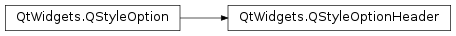

QStyleOptionHeader¶
Detailed Description¶
The
PySide2.QtWidgets.QStyleOptionHeaderclass is used to describe the parameters for drawing a header.
PySide2.QtWidgets.QStyleOptionHeadercontains all the information thatPySide2.QtWidgets.QStylefunctions need to draw the item views’ header pane, header sort arrow, and header label.For performance reasons, the access to the member variables is direct (i.e., using the
.or->operator). This low-level feel makes the structures straightforward to use and emphasizes that these are simply parameters used by the style functions.For an example demonstrating how style options can be used, see the Styles example.
See also
-
class
PySide2.QtWidgets.QStyleOptionHeader¶ -
class
PySide2.QtWidgets.QStyleOptionHeader(other) -
class
PySide2.QtWidgets.QStyleOptionHeader(version) Parameters: - other –
PySide2.QtWidgets.QStyleOptionHeader - version –
PySide2.QtCore.int
Constructs a
PySide2.QtWidgets.QStyleOptionHeader, initializing the members variables to their default values.Constructs a copy of the
otherstyle option.- other –
-
PySide2.QtWidgets.QStyleOptionHeader.StyleOptionType¶ This enum is used to hold information about the type of the style option, and is defined for each
PySide2.QtWidgets.QStyleOptionsubclass.Constant Description QStyleOptionHeader.Type The type of style option provided ( SO_Headerfor this class).The type is used internally by
PySide2.QtWidgets.QStyleOption, its subclasses, andqstyleoption_cast()to determine the type of style option. In general you do not need to worry about this unless you want to create your ownPySide2.QtWidgets.QStyleOptionsubclass and your own styles.See also
QStyleOptionHeader.StyleOptionVersion
-
PySide2.QtWidgets.QStyleOptionHeader.StyleOptionVersion¶ This enum is used to hold information about the version of the style option, and is defined for each
PySide2.QtWidgets.QStyleOptionsubclass.Constant Description QStyleOptionHeader.Version 1 The version is used by
PySide2.QtWidgets.QStyleOptionsubclasses to implement extensions without breaking compatibility. If you useqstyleoption_cast(), you normally do not need to check it.See also
QStyleOptionHeader.StyleOptionType
-
PySide2.QtWidgets.QStyleOptionHeader.SectionPosition¶ This enum lets you know where the section’s position is in relation to the other sections.
Constant Description QStyleOptionHeader.Beginning At the beginining of the header QStyleOptionHeader.Middle In the middle of the header QStyleOptionHeader.End At the end of the header QStyleOptionHeader.OnlyOneSection Only one header section See also
position
-
PySide2.QtWidgets.QStyleOptionHeader.SelectedPosition¶ This enum lets you know where the section’s position is in relation to the selected section.
Constant Description QStyleOptionHeader.NotAdjacent Not adjacent to the selected section QStyleOptionHeader.NextIsSelected The next section is selected QStyleOptionHeader.PreviousIsSelected The previous section is selected QStyleOptionHeader.NextAndPreviousAreSelected Both the next and previous section are selected See also
selectedPosition
-
PySide2.QtWidgets.QStyleOptionHeader.SortIndicator¶ Indicates which direction the sort indicator should be drawn
Constant Description QStyleOptionHeader.None No sort indicator is needed QStyleOptionHeader.SortUp Draw an up indicator QStyleOptionHeader.SortDown Draw a down indicator See also
sortIndicator
-
PySide2.QtWidgets.QStyleOptionHeader.section¶
-
PySide2.QtWidgets.QStyleOptionHeader.text¶
-
PySide2.QtWidgets.QStyleOptionHeader.textAlignment¶
-
PySide2.QtWidgets.QStyleOptionHeader.icon¶
-
PySide2.QtWidgets.QStyleOptionHeader.iconAlignment¶
-
PySide2.QtWidgets.QStyleOptionHeader.position¶
-
PySide2.QtWidgets.QStyleOptionHeader.selectedPosition¶
-
PySide2.QtWidgets.QStyleOptionHeader.sortIndicator¶
-
PySide2.QtWidgets.QStyleOptionHeader.orientation¶
© 2018 The Qt Company Ltd. Documentation contributions included herein are the copyrights of their respective owners. The documentation provided herein is licensed under the terms of the GNU Free Documentation License version 1.3 as published by the Free Software Foundation. Qt and respective logos are trademarks of The Qt Company Ltd. in Finland and/or other countries worldwide. All other trademarks are property of their respective owners.